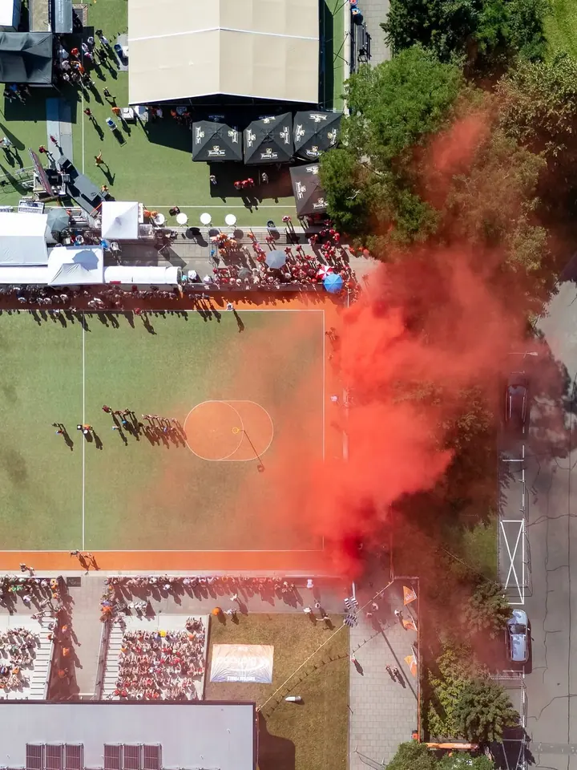
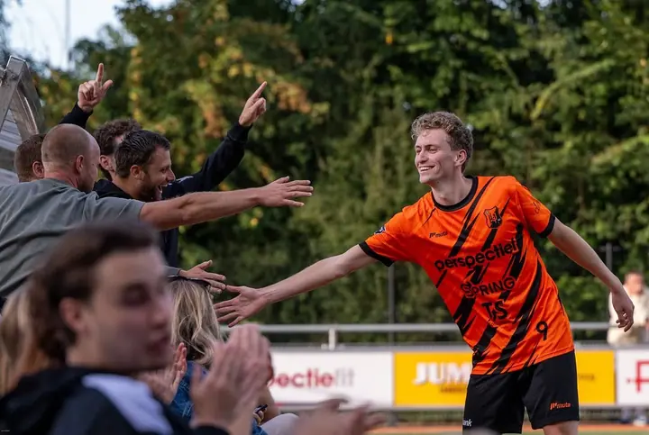

01 / 04
Sportovní fotografie
Nejčastěji fotím korfbal, od mládežnických zápasů U17 a U19 až po Korfbal League. Snažím se zachytit souboje o míč, radost po gólu i chvíle, kdy hráč chvíli sám přemýšlí na palubovce.
Zeptat se na termín→

Korfbal zblízka, od lajny po tribunu
Zeptat se na termín →(01) Ahoj
Jmenuji se W. van Zwamen a pod značkou WVZ Fotografie fotím sport, hlavně korfbal . Stojím u lajny při mládežnických zápasech i při finále Korfbal League a ze všeho nejvíc mě baví emoce hráčů a fanoušků na tribunách .
964lidí sleduje mou práci na Instagramu
1 631příspěvků s fotkami a příběhy
(02) Co fotím
01 / 04
Nejčastěji fotím korfbal, od mládežnických zápasů U17 a U19 až po Korfbal League. Snažím se zachytit souboje o míč, radost po gólu i chvíle, kdy hráč chvíli sám přemýšlí na palubovce.
Zeptat se na termín→02 / 04
Fotím finálové zápasy v hale i venku, třeba finále Korfbal League v Rotterdamu nebo finále NK Veld v Driebergenu. Kromě hry fotím i atmosféru v hale, plné tribuny a světla.
Zeptat se na termín→03 / 04
Fotky z každého zápasu nahrávám do online galerie seřazené podle týmů a data. Hráči, rodiče i fanoušci si v ní najdou své snímky a mohou si je objednat.
Zeptat se na termín→Dále nabízím
Kromě sportu fotím také přírodu. Je to pro mě klidnější protipól k rychlým zápasům.
↗(04) Postup
Od první zprávy po hotovou galerii.
Krok 1 z 4
Napíšete mi, o jaký zápas nebo turnaj jde, kde a kdy se hraje. Domluvíme se, co pro vás má být na fotkách nejdůležitější.
Krok 2 z 4
Během zápasu fotím hru, hráče i tribuny. V hale i venku na hřišti.
Krok 3 z 4
Po zápase vyberu nejlepší snímky a upravím je tak, aby měly barvy a atmosféru, jaké byly v hale.
Krok 4 z 4
Fotky nahraju do galerie pojmenované podle týmů a data zápasu. Tam si je můžete prohlédnout a objednat.
Hra trvá hodinu, fotky zůstanou
(05) Za objektivem
Fotím sport v Nizozemsku. Nejvíc času trávím u korfbalových hřišť a v halách, kde se hrají zápasy kategorií U17 a U19 i ty nejvyšší soutěže. Kromě WVZ Fotografie stojím také za Korfbalfoto.nl.
Sport se nedá zopakovat, proto chci mít vybavení, na které se mohu spolehnout. Fotím na Nikon Z9 a Nikon Z8. Hlídám rozhodující souboje o míč, ale stejně důležité jsou pro mě oslavy po zápase, plné tribuny nebo pohled na hřiště shora.
Fotky z každého zápasu dávám do online galerie, kde si je hráči, rodiče i kluby snadno najdou. Když zrovna nejsem na zápase, fotím přírodu.
W.
W. van Zwamen · Sportovní fotograf
Všechny zápasy mám v online galerii seřazené podle týmů, místa a data. Stačí najít ten svůj.
Přímo v galerii. Vyberete si snímky, vložíte je do košíku a objednávku dokončíte online.
Korfbal fotím nejčastěji, ale věnuji se sportovní fotografii obecně a fotím také přírodu.
Napište mi přes formulář, kdy a kde se hraje. Podívám se, jestli termín stihnu, a domluvíme podrobnosti.
(07) Kontakt
Napište pár vět o tom, co si představujete, a termín, který se vám hodí.
info@oypo.nl